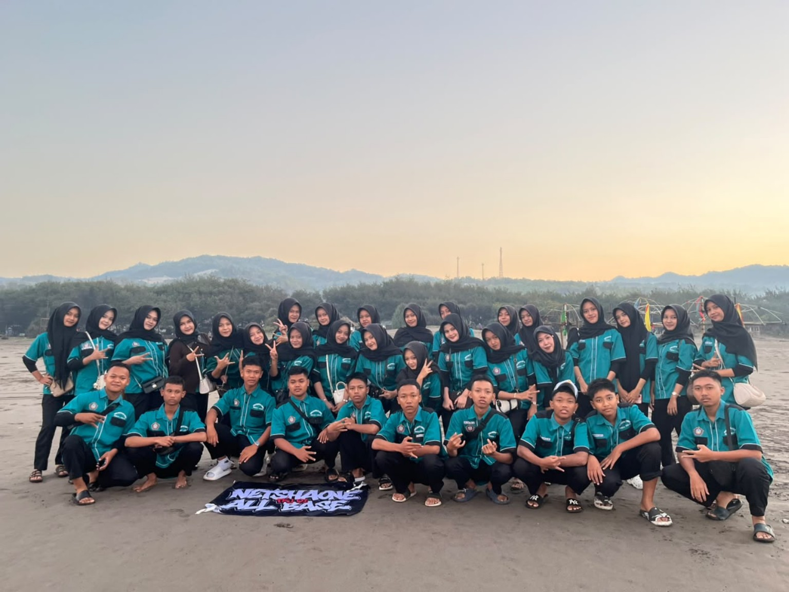

📝
3Tugas aktif
Terpantau
WELCOME TO
Website digital resmi untuk jadwal, piket, siswa, guru, pengumuman, tugas, dan informasi XI TKJ 1.
XI TKJ COMMAND CENTER
Semua aktivitas kelas dalam satu website yang cepat, responsif, dan nyaman di HP maupun laptop.
Notifikasi kelas, tugas, dan pengumuman terbaru tersedia di bagian Info.
Kelola file dan link kelas dari modul File Center.
Gunakan tombol tema di navbar untuk mengganti mode terang dan gelap.
CLASS TASK MANAGER
TKJ KNOWLEDGE BASE
TKJ TOOLBOX
CLASS SCHEDULE
CLASS DUTY SYSTEM
CLASS MEMORIES
Satu folder, satu cerita. Pilih album dan buka semua momen kelas dalam tampilan galeri.
LATEST INFORMATION
Semua informasi kelas akan ditampilkan melalui website ini.
Pastikan datang tepat waktu dan melaksanakan piket sesuai jadwal.
CLASS ACHIEVEMENTS
CLASS CALENDAR
CLASS FILE CENTER
CLASS NOTIFICATION CENTER
Notifikasi dibuat dari tugas, jadwal, pengumuman, dan aktivitas terbaru. Data dibaca dari penyimpanan lokal.
CLASS FINANCE
CLASS EVENTS
Presentasi project web kelas.
CLASS LINK HUB
CLASS VOTING
XI TKJ 1 • MUSIC HUB
Kumpulan lagu favorit siswa, jadi satu playlist kelas.
ABOUT XI TKJ 1
XI TKJ 1 bukan sekadar ruang kelas. Ini adalah tempat 36 siswa berbagi ide, pengalaman, tugas, jadwal, dan momen yang akan terus diingat.
Membangun kelas yang saling mendukung dan berani berkembang.
Belajar bersama, membuat sesuatu yang nyata, lalu tumbuh bersama.
Website kelas digital untuk menyimpan informasi, jadwal, data siswa, kegiatan, dan kenangan keluarga besar XI TKJ 1.